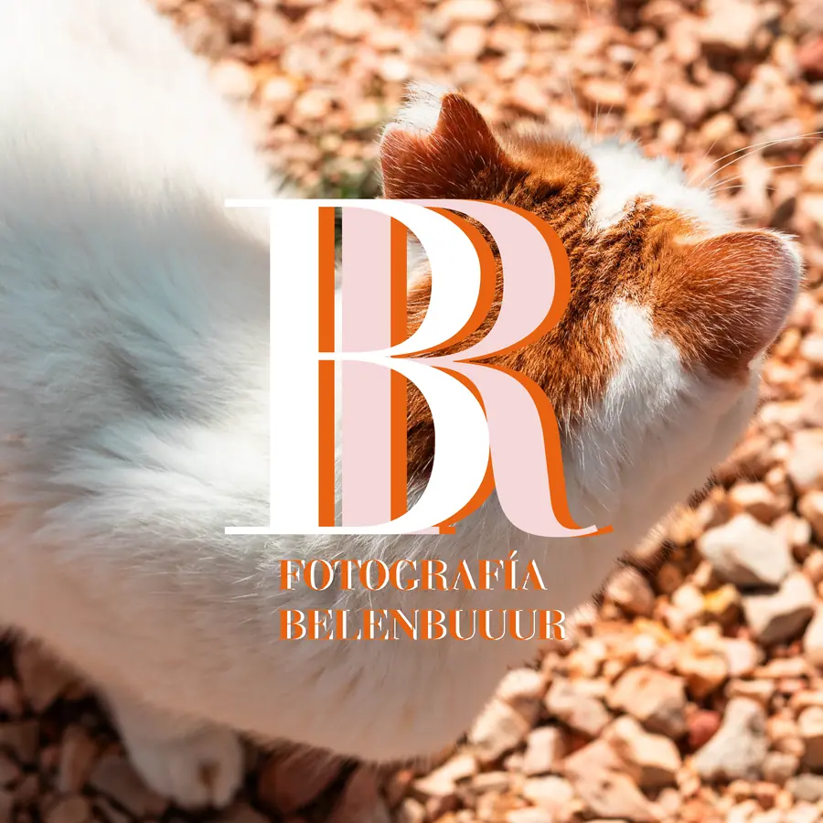
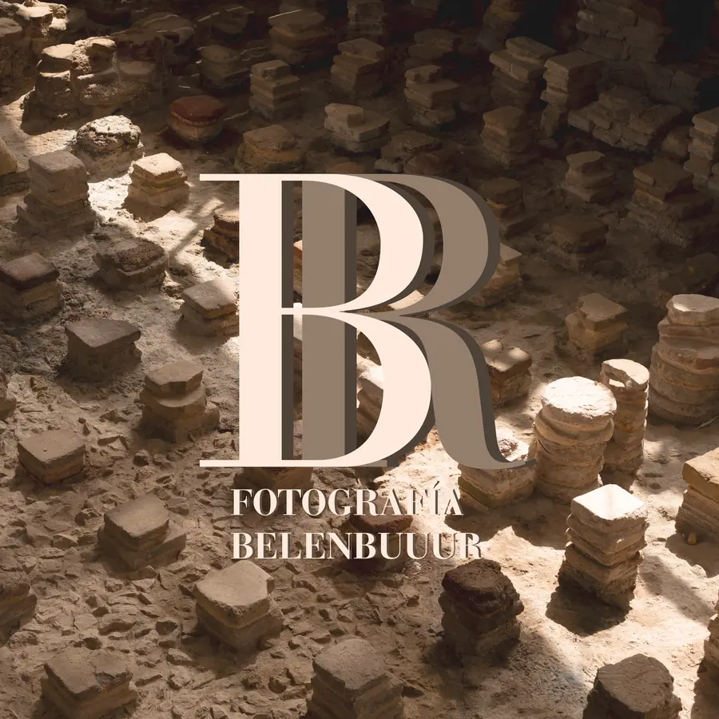
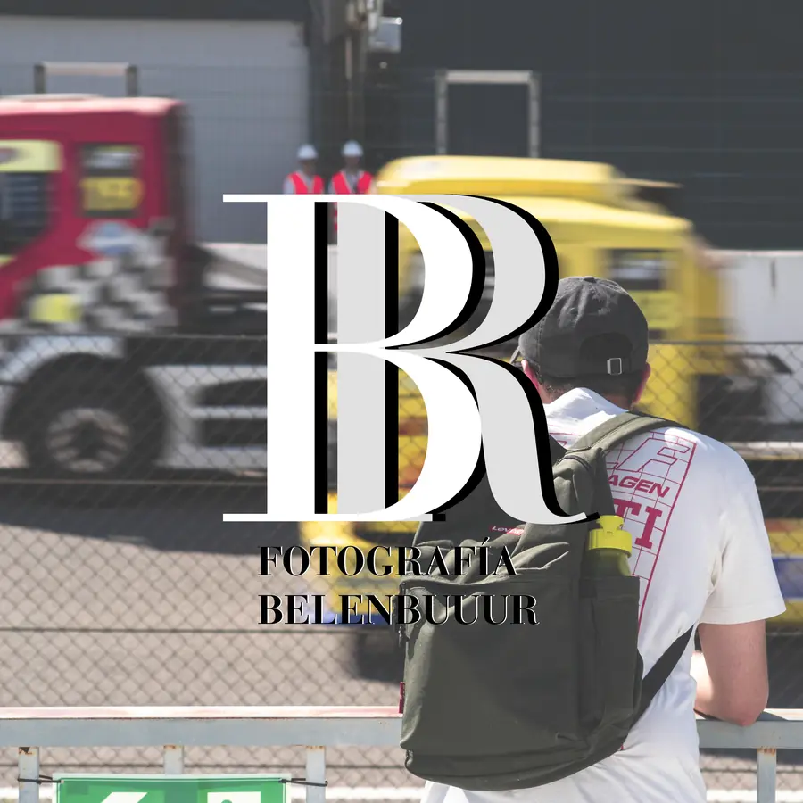
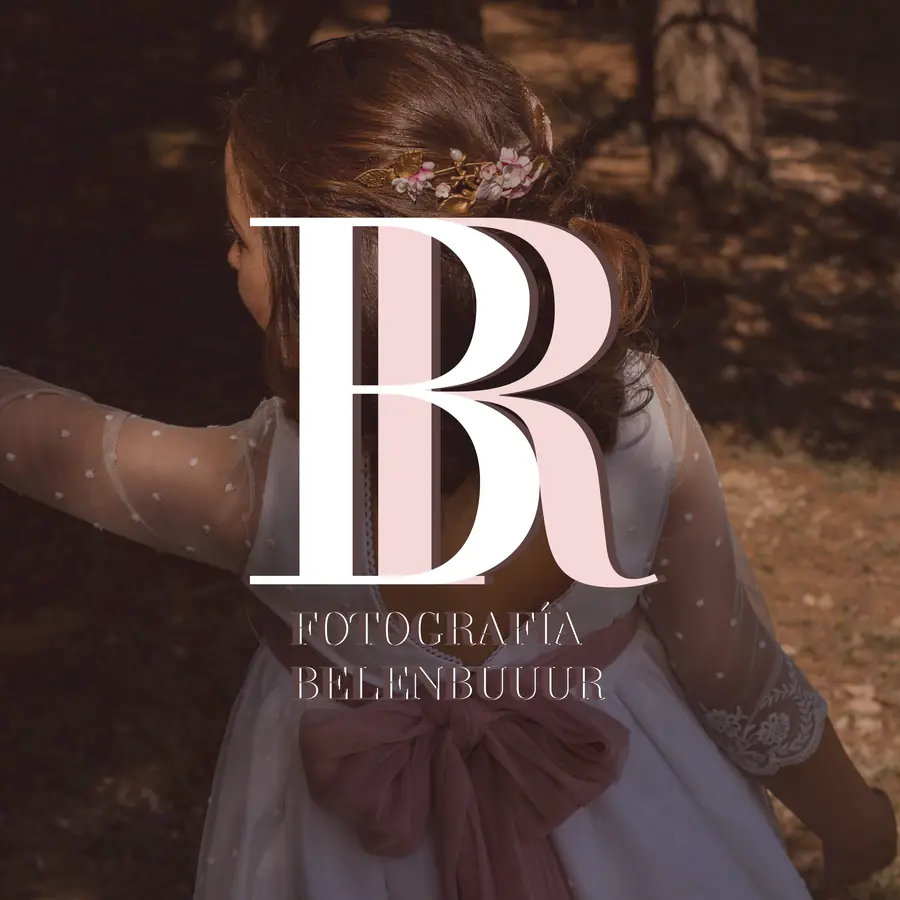
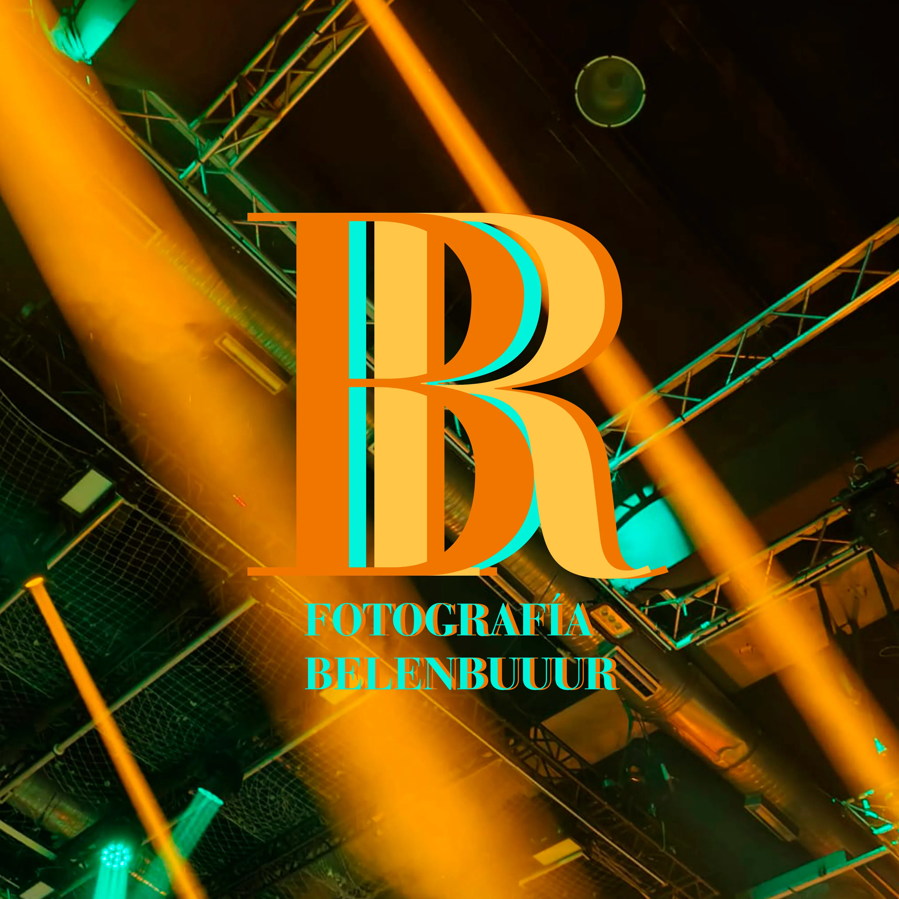
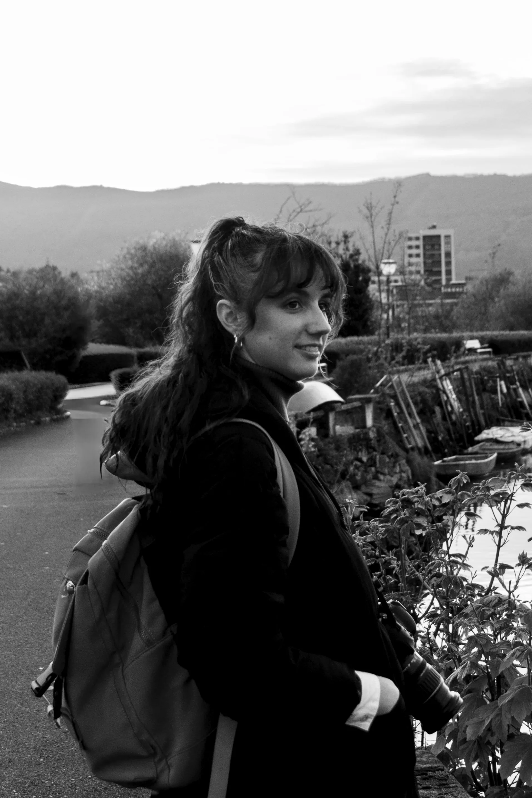

Accede a la galería completa de la Belenbuuur de siempre. Desde fotografía del día a día a los eventos más exigentes..

Belenbuuur pero con algo más de pelo, y bigotes generalmente. Si te gustan los animales, prepárate para morir de amor con los más adorables.

Belenbuuur pero con casco de obra. Suelo ser la compañera de viaje que lleva la lista de edificios a visitar, para algo me curré la carrera de arquitectura.

Belenbuuur pero más rápida, más veloz, o más fuerte. No soy muy fan de la adrenalina, pero de hacerle fotos a los que la disfrutan, sí.

Belenbuuur de celebración, de esas con las que tiras la casa por la ventana. Bodas, bautizos, comuniones y todo lo que les rodea.

Belenbuuur descubriendo trajes regionales y fiestas que no podemos perdernos en cada rincón. Dispuesta a dormir poco y cantar mucho siempre.

Entiendo que con eso de Belenbuuur podáis pensar que mi nombre es Belén, está completamente justificado, sé que la culpa es mía. Es más, ya respondo también al nombre de “Belén”.
De pequeña fui una niña con una cámara a la que le gustaba mantener recuerdos. Hoy soy una mujer con más cámaras -no especificaré número para que nadie dude de mi cordura- a la que le encanta explorar los rincones de la fotografía y lo que ofrece cada uno de sus formatos. Este impulso dio lugar al nacimiento de FOTOGRAFÍA BELENBUUUR.
Sin embargo, nunca he sabido especializarme, me apasionan los animales y la arquitectura, adoro los retos de los eventos deportivos, y me emociona capturar festividades y celebraciones. Así que mi pensamiento fue… ¿y si dejo que cada enfoque fluya?
Por ello crece ARQUIBUUR, para recoger mis pensamientos arquitectónicos; BELENPUUUR, para mostraros la cantidad de animales que soy capaz de ver y disfrutar en cada paso; BELENBRUUUM, para seguir retándome y conocer nuevos deportes; FESTIBUUUR, para recorrer el mundo entre fiestas locales y festivales; y finalmente CHINCHÍNBUUUR, para no olvidarnos de que hay motivos para celebrar.
Todas estas facetas son los pilares de mi trabajo: una mezcla de técnica, sensibilidad y celebración. He organizado mi universo para que elijas tu propia experiencia: si tienes curiosidad por el conjunto, quédate en BELENBUUUR; si prefieres profundizar en una pasión concreta, toma el atajo que más te inspire.